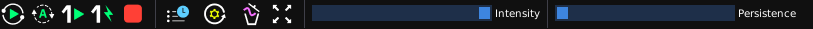
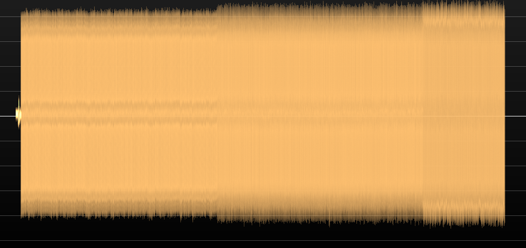
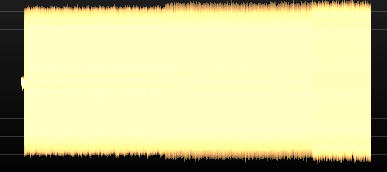
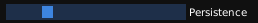
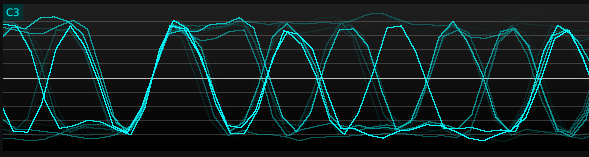

The only fixed UI elements in ngscopeclient are the main menu and toolbar at the top of the window. All remaining space may be filled with waveform plots, properties dialogs, protocol analyzers, and other dockable windows as required for a given experimental setup. This flexibility allows almost the entire screen to be dedicated to waveform views, or more space allocated to controls and protocol decodes.
This menu contains commands for saving and loading session files.
Save
Saves UI configuration and waveform data (including history) to a session file for future use.
A session consists of a YAML file called filename.scopesession containing instrument and UI configuration, as well as a directory called filename_data which contains waveform metadata and sample values for all enabled instrument channels, including history.
Note that both the .scopesession and the _data directory must be copied if moving the session to a new location in order to preserve waveform data. If you only wish to restore the filter graph and UI configuration without waveform content, the _data directory is not required.
This menu allows new waveforms views or instrument connections to be created.
This menu provides access to various utility windows.
Provides access to various features intended only for developers.
SCPI Console
Opens a console window allowing you to send raw SCPI commands to a currently connected
instrument.
This is a low level debug tool primarily intended for use by driver developers. The console is interlocked with background threads polling the instrument, so that replies to commands typed in the console will not be mixed with replies which the instrument driver is expecting to its own commands. However, commands sent in the console will bypass any caching in the driver and can easily lead to the driver and instrument firmware states becoming mutually inconsistent.
ImGui Demo
Launches a GUI library demo window allowing you to test out various widgets and features
Memory Leaker
Allows you to allocate a large block of memory (up to 4GB or the Vulkan allocation limit per dialog instance, but multiple dialogs may be spawned) in order to test video or system memory pressure.
Hardware Flags
Opens the Hardware Flags dialog, which allows you to override automatic detection of CPU
and GPU feature flags. This is mostly intended to allow testing of fallback code (by disabling
a code path that your hardware supports, pretending your CPU or GPU is less capable than
it is in reality).
NOTE: This is a low level interface with no validation. If you enable a feature that was not automatically enabled, ngscopeclient is very likely to crash with an illegal-instruction exception (GPU-side equivalent) at an unpredictable time in the future when a filter or driver attempts to use the unavailable functionality.
The toolbar contains buttons and controls for the most frequently used actions.

The capture button group (Fig. 5.2) contains five buttons. From left to right these are “arm normal trigger", “arm auto trigger", “arm one-shot trigger", “immediate/forced trigger", and “stop trigger".
Note that the “normal" and “auto" trigger mode still uses one-shot capture internally so that all waveform data can be downloaded before the next trigger event 1, so it is normal to see the scope rapidly switching back and forth between single-shot and stopped mode.
The history button (Fig. 5.3) toggles display of the waveform history view.
In order to improve performance, ngscopeclient caches many instrument settings locally rather than constantly querying the instrument for the current timebase, trigger configuration, etc. If settings are changed via the instrument front panel while ngscopeclient is running, ngscopeclient may not be aware of these changes.
The Refresh Settings button (Fig. 5.4) clears all cached instrument configuration and updates ngscopeclient with the current instrument settings. For most “headless" instruments, such as Pico Technology devices or the ThunderScope, this button has no effect.
The Clear Sweeps button (Fig. 5.5) clears all persistence waveforms, accumulated eye pattern / waterfall data, and any other data that filter grap blocks persist across multiple waveforms. Waveform data, both history and the currently displayed waveforms, are not deleted.
The Fullscreen button (Fig. 5.6) toggles ngscopeclient between normal and full-screen mode.
The opacity slider (Fig. 5.7) controls the alpha/opacity used to display intensity-graded waveforms. At the leftmost position, waveforms are invisible. At the rightmost position, waveforms are fully opaque with no intensity grading other than that provided by antialiasing (Fig. 5.9). Experiment to find what setting gives the most useful visualization for your data (Fig. 5.8).


The persistence slider (Fig. 5.10) controls the decay rate for persistence-mode waveform display. At the far-left position (default) there is no persistence, and only the data from the most recent trigger event is visible. At the far right position, waveforms persist forever (until the clear-sweeps button is clicked or the display is scrolled/zoomed).
Persistence is applied to all analog and digital waveforms by default, but can be turned off for any individual waveform by right clicking the channel name in the plot and unchecking the “persistence" menu item. Digital buses and protocol decodes do not support persistence, and will always only show the most recent waveform state.


1The repeating-trigger mode on almost all benchtop oscilloscopes is not interlocked with data transfer, meaning that attempting to download waveform data when the trigger is active will likely lead to corruption or desynchronization in which the data from one channel is from a later trigger event than a channel downloaded previously. Halting the trigger during waveform transfer avoids this issue, although refresh rate is reduced somewhat.